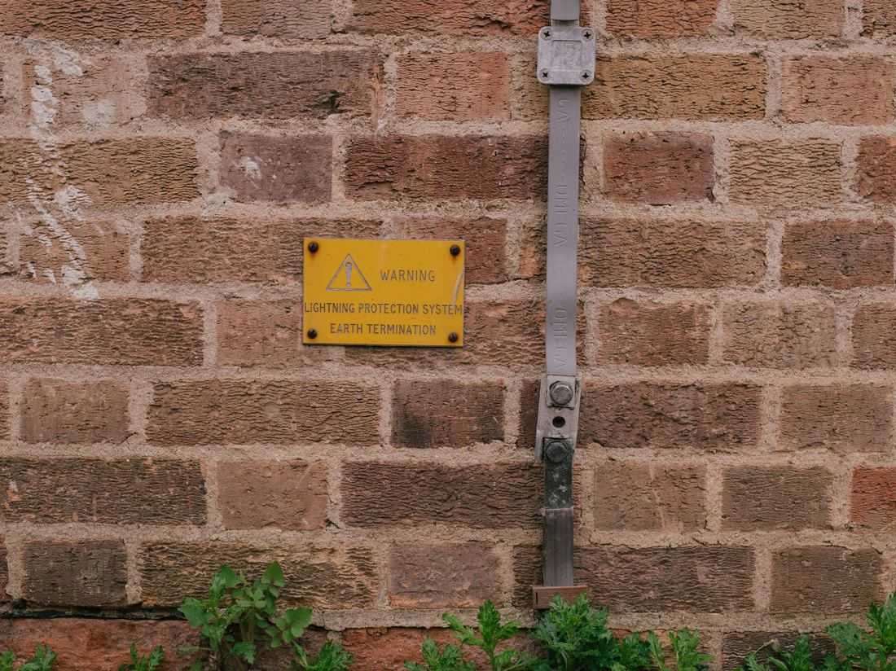

Grounding is the part of a solar installation that never produces a single watt — and it's also the part most likely to be rushed, skipped, or done just well enough to pass a quick glance. That's a problem, because a properly grounded system is what keeps a fault from becoming a fire, a shock, or a destroyed inverter. This guide covers why grounding matters and how to actually verify it, rather than just assuming a cable running to a rod means the job is done.
Why grounding matters
A solar PV system's grounding serves two distinct, equally important purposes:
- Equipment grounding — bonds all the non-current-carrying metal parts (panel frames, racking, inverter enclosure, combiner boxes) together and to earth. If insulation fails anywhere and a live conductor touches a frame, equipment grounding gives that fault current a low-resistance path to earth, tripping a breaker or fuse instead of energizing the frame and waiting for a person to complete the circuit.
- System/functional grounding — grounds one of the current-carrying conductors (common on some inverter topologies) to stabilize voltage relative to earth and help ground-fault detection circuits work correctly.
Without solid equipment grounding specifically, a single insulation fault can turn every metal surface in the array into a live conductor — with no visible sign until someone touches it.
Just like any other electrical system, grounding matters here for two reasons: it protects people's safety, and it prevents anything unexpected from happening by discharging any leakage current safely into the earth. This is done by bonding the entire system to a copper rod driven into the ground — so if a leakage current occurs, it's directed entirely into the earth instead of through anything (or anyone) else.
What commonly goes wrong
| Issue | Why it happens | Consequence |
|---|---|---|
| Loose or corroded grounding lugs | Dissimilar metals, weather exposure, poor torque | High-resistance ground path — fault current may not trip protection reliably |
| Missing bonding jumpers between rail sections | Assumption that rails are electrically continuous through clamps alone | Isolated ungrounded metal sections |
| Undersized ground rod / poor soil contact | Rocky, sandy, or very dry soil with high resistivity | Ground resistance too high to safely dissipate fault current |
| Painted or anodized surfaces under grounding lugs | Lug installed without removing the coating first | Coating acts as an insulator, defeating the connection |
How to inspect grounding in the field
- Visual check first. Follow the grounding conductor from every major component — panels, racking, combiner box, inverter — back to the grounding electrode. Look for corrosion, loose lugs, and any coated surface a lug was clamped onto without prepping.
- Continuity check. With the system de-energized, use a multimeter on continuity/resistance mode between two points that should be electrically bonded (e.g. one panel frame and the inverter chassis). A reading close to 0Ω confirms a solid bond; anything reading open or high resistance needs attention.
- Ground resistance test. For the grounding electrode itself (rod, plate, or grid), a proper ground resistance tester (using the fall-of-potential or clamp-on method) gives you the actual resistance to earth in ohms — this is the number that matters for code compliance, not just "is it connected."
- Torque check on accessible lugs. Many grounding failures are mechanical, not electrical — a lug that was hand-tight will loosen with thermal cycling over months. Torque to the manufacturer's spec where accessible.
What counts as an acceptable ground resistance?
Most electrical codes target 25Ω or less for a single ground electrode (some jurisdictions and equipment manufacturers specify lower, such as 5-10Ω for sensitive electronics). If a single rod can't reach the target in high-resistivity soil, the standard fix is adding more rods spaced at least their own length apart and bonding them together, or using a longer rod, chemical grounding rods, or a ground grid rather than assuming one rod is always enough.
Grounding is one item on any commissioning check — see our pre-commissioning checklist and the common installation mistakes guide. To verify continuity and voltages in the field, our guide on testing a panel with a multimeter covers the basics.
Frequently asked questions
Do off-grid systems need grounding too?
Yes — equipment grounding for shock protection is still necessary even without a utility connection. The specific rules can differ slightly, but the safety principle is unchanged.
Can I test grounding myself, or do I need a professional?
A basic continuity check with a multimeter is within reach for most installers. A proper ground resistance test to earth generally requires a dedicated ground resistance tester — if you don't have access to one, this specific measurement is worth outsourcing to someone who does.
How often should grounding be re-inspected?
An annual visual and continuity check is a reasonable baseline, with more frequent checks in coastal, humid, or highly corrosive environments where connections degrade faster.